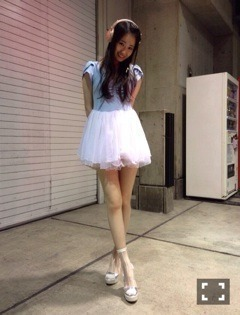

2014/0719Sat（´-`）.｡oO(かずみ ん×294 質問受付!
バケラッタ〜♪
バケラッタってブログ以外で
ほとんど使ったことないことに
気づいたわたし！笑
ミラクル9！見ていただけたかな？
今も準レギュラー目指してます！！
今回は義務教育クイズ
全問正解できたの\(^3^)/
ちょっとだけだけど勉強していった
甲斐があったカナ？？
ただプレッシャークイズでは
正解できませんでした(ﾉ;ω;)ﾉ
周りの方々がいい人すぎて
失敗すると胸が痛いです(´;ω;`)
大家さんもこじるりさんも
遠くから応援してくださって、
嬉しかったです( ∩ˇωˇ∩)
いつも優しくしてくださって
ありがとうございます！！！
また出させていただく時は
頑張るぞーーー＼(^o^)／
-------
先週の個別握手会！
来てくださったみなさん♡
ありがとうございました〜(*´ｰ`*人)
お洋服はこちら♪

水色と白のワンピっ(*´ω`*)
ヘッドホンとも合うかもー♡
水色とピンク好きっ！！
最近本当に服の系統変わったねって
言われます！
柄物あまり着なくなった((((/*0*)/
ほりちゃん達が浴衣着てたな〜
うーん、次の握手会は浴衣
着ようかなー(´・ω・｀)
浴衣似合わないんだよなー泣
イカリ肩だから！！！
でも...勇気
出して
着ちゃおうかなぁ？
実はみなみと髪型おそろっち♡
みなみとはいつも
前髪シンメで〜す*\(^o^)/*
---------
もうすぐでブログの更新も
（´-`）.｡oO（かずみん×300!!!
ということで
「300だからやっちゃおう♪
質問コ〜ナ〜
〜
〜
〜！」
このブログのコメントで
質問を受け付けます！
300が更新されるまで
受け付けますので
みなさん良かったら
高山に質問してやってください♪
あぁ
いつか髪型総選挙もやりたい(´∀｀)σ
1.ロング前髪あり
2.ロング前髪なし
3.ボブ前髪あり
4.ボブ前髪なし
5.その他
みんなはどの高山がいいんだろ〜笑
まぁ結局好みだよな(σ・з・)σ
今はこの5つでなんとなく
悩んでるって次第です。笑
ただばっさり切る勇気が
まだないから...∩(´;ヮ;｀)∩
髪型総選挙はまだしないけど
握手会とかで何番がいいか
なんとなーく教えてくれたら
うれぴーです♪♪
質問の方、待ってます(^o^)/
最後にマイブーム。
フランスの塩とゆで卵。
実はラブライブのスクフェスも
ハマっててやばいです〜！
この前はキャンペーンだったので
めっちゃやりこんでました！
MFで言った通り
乃木ちゃん結構流行ってて、
その中でも私、ひめたん、あすーは
比較的早めのプリンシパルの
時期から始めてるので
ちょっと最近はヲタク化してます。笑
ちなみに推しは海未ちゃんと
真姫ちゃんですヽ(´>∀<`*)ﾉ
音ゲー好きなんだよね〜♪♪
皆さんの中で
やってる方いますか！？！？
いたら教えてちょー♡
--------
明日は京都で全国握手会！
ミニライブは
なくなってしまいました(´;ω;`)
うぅ残念...
楽しみにしてくださったみなさん
ごめんなさい。
握手で...待ってます！！！
久々に陽菜ちゃんとです！
飴と鞭( ´ ▽ ` )ﾉ
皆さんと会えるのを楽しみに
していますっ♡
ではでは今日はこの辺で！
posipeaceっっ
↑なぁちゃんのばいっっ風( ´ ▽ ` )ﾉ
2014/07/19 00:06
コメント(1610)
かずみかんだよ
かずみー
好きよ〜好き好き。はーと
アメイジング( *｀ω´)
かずみんすきだいすき
早くかずみんに会いたいなー
かずみーーん明日の握手たのしみだー＼(^o^)／
高山LOVEアメイジング＼(^o^)／
かわいいです！
エマシさんを知ってますか？
エマシさんを知ってますか？
一実さん〜∩^ω^∩
BS行くよ〜楽しみ〜！
香水まだメロンのやつ使ってますか？
BS行くよ〜楽しみ〜！
香水まだメロンのやつ使ってますか？
ミラクル9見たよ(*´ `*)！
プレッシャーって怖い…
みなみちゃんとの写真ありがと\( ˆoˆ )/
またかずみんとも握手したいなー♡
プレッシャーって怖い…
みなみちゃんとの写真ありがと\( ˆoˆ )/
またかずみんとも握手したいなー♡
一実ん、お疲れ様。
推しみなのエマシだよ！！
質問
コンビニなら何が好き？
質問
コンビニなら何が好き？
バケラッター
バケラッタもっと使ってけ〜笑
ミラクル9面白かった〜(^_^)
また3日後に！！
バケラッタもっと使ってけ〜笑
ミラクル9面白かった〜(^_^)
また3日後に！！
かずみんお久しぶり！
質問きてああああああ(ﾟ∀ﾟ)
勉強で疲れた時どんなリフレッシュして切り替える？
もうすぐテストでずっと勉強漬けなんすよ(´･ω･`)
なす
二期生ではだれと仲良し？？(^-^)/
京花ちゃんとは仲良しかな？？(^-^)/
京花ちゃんとは仲良しかな？？(^-^)/
今ギャグに困ってて、なにか面白いギャグないですか？
かずみん
やあやあ( ´ ▽ ` )ﾉ
最近起こったアメイジング*\(^o^)/*なこと教えてください( ´ ▽ ` )ﾉ
鹿児島に来たことありますか？また、鹿児島のイメージを教えてください。
かずみんはマジでおいでシャンプーのジャケ写が神！
かずみんこんばんわ！
いや
バケラッタ！！
か笑
偶然なgoodタイムということで
ななみんとのおもしろエピソードあったら教えて～( ´▽｀)
ってななみん推しかよ！！
ごめんね笑
では！
いや
バケラッタ！！
か笑
偶然なgoodタイムということで
ななみんとのおもしろエピソードあったら教えて～( ´▽｀)
ってななみん推しかよ！！
ごめんね笑
では！
バケラッタ！！
かずみんに質問！！
お財布なに使ってる！？
質問返されたらアメージングだな
＼(^o^)／＼(^o^)／＼(^o^)／＼(^o^)／
暑い日が続くけど体調気をつけて！
かずみん痩せたよね？！
どんどんかわいくなるー♡
かずみんに質問！！
お財布なに使ってる！？
質問返されたらアメージングだな
＼(^o^)／＼(^o^)／＼(^o^)／＼(^o^)／
暑い日が続くけど体調気をつけて！
かずみん痩せたよね？！
どんどんかわいくなるー♡
乃木坂の曲で一番好きな曲はなんですか？
頑張ってね(*^▽^*)
1番で！
イカリ肩ってなに？
質問
なんでそんなに脚長いし、綺麗ん！？
さわ…なんもないw
イカリ肩ってなに？
質問
なんでそんなに脚長いし、綺麗ん！？
さわ…なんもないw
高山さん応援してます
こんにちは！
パンだったらなんのパンが好きですか？？
よければ回答お願いします！
失礼しました。
パンだったらなんのパンが好きですか？？
よければ回答お願いします！
失礼しました。
質問☆
かずみん最近ディズニーリゾートには行ってる？
髪型は前髪ありロングが好きかな(*´ω｀*)
なんでも好きだけど♡
かずみんスタイル良すぎ〜〜！！！！！
憧れ♡
質問です(*^^*)
かずみんは握手で一番なにを大切にしてますか？＼(^o^)／
高山LOVEアメイジング＼(^o^)／
かずみんバケラッタ(*･ω･)ﾉ
わー質問受付嬉しい♡♡
わたし新規だから、前にも聞かれたことあるかもしれないけど、
・握手会の時、こっちが年下ならタメと敬語どっちの方がいいですか??
・モバメのお返事ってブログのコメント欄に書くのとメールに返信するのどっちがいいですか??
ずっと聞きたかったからこれ聞いちゃう♡
答えてくれたら嬉しいなあ(o^^o)
長くなっちゃうから
ブログについてはまたコメントするねーっ！
まこ⊿
アメイジング( *｀ω´)
かずみんお久しぶり٩(*❛⊰❛)۶ ɭ ɿʑ̀～ɭ ɿ❤
最近早く話したくてやばいっす！笑
21日行くからよろしくね！(´･Д･)」
かずみん最近はどのアーティストの曲きいてるの？よかったら教えて！
俺はカサブタ聴いてるぜ！
じゃーのー(΄（☸）◞౪◟（☸）‵)
かずみんお久しぶり٩(*❛⊰❛)۶ ɭ ɿʑ̀～ɭ ɿ❤
最近早く話したくてやばいっす！笑
21日行くからよろしくね！(´･Д･)」
かずみん最近はどのアーティストの曲きいてるの？よかったら教えて！
俺はカサブタ聴いてるぜ！
じゃーのー(΄（☸）◞౪◟（☸）‵)
こんばんは！
更新ありがとです！！
ミラクルナイン見ました！
最後ね〜笑
櫻井、、、
潤！！笑
高山同士最後までお疲れ様でした！
〜質問〜
静岡県出身なのですが、ズバリ！静岡県のイメージは？？
そして、この前の握手ありがとうございましたー(((o(*ﾟ▽ﾟ*)o)))
黒タンクトップで1部行きました(^ ^)
いつも会う度に
『久しぶりー！』
って言ってくれるかずみんさんが本当大好きです(>_<)
改めてありがとうございます！
あのなんとも言えない感じの雰囲気の会話大好きです！
ビックサイトも4部一枚だけとれたので楽しみ(((o(*ﾟ▽ﾟ*)o)))
では、
おやすみなさーい
こうへい
更新ありがとです！！
ミラクルナイン見ました！
最後ね〜笑
櫻井、、、
潤！！笑
高山同士最後までお疲れ様でした！
〜質問〜
静岡県出身なのですが、ズバリ！静岡県のイメージは？？
そして、この前の握手ありがとうございましたー(((o(*ﾟ▽ﾟ*)o)))
黒タンクトップで1部行きました(^ ^)
いつも会う度に
『久しぶりー！』
って言ってくれるかずみんさんが本当大好きです(>_<)
改めてありがとうございます！
あのなんとも言えない感じの雰囲気の会話大好きです！
ビックサイトも4部一枚だけとれたので楽しみ(((o(*ﾟ▽ﾟ*)o)))
では、
おやすみなさーい
こうへい
座右の銘は何すな？
でこぴん のときのかずみんの
髪型すき〜っo(｀ω´ )o♡♡
かずみんは夏といえば これっ！てゆう
食べ物ありますか(｀_´)？？！
わたしはそうめんと冷やしトマトかな 〜 ♡
ぽじぴーす！
髪型すき〜っo(｀ω´ )o♡♡
かずみんは夏といえば これっ！てゆう
食べ物ありますか(｀_´)？？！
わたしはそうめんと冷やしトマトかな 〜 ♡
ぽじぴーす！
お疲れ様です！いやー握手会のデコ出し、可愛かった(*´ω`*)
ミラクルナインも観ましたよバッチリ！
なんか、ほんとみんないい人だね。
質問、
今年の夏は海に行く予定ある？
ミラクルナイン準レギュラー目指して頑張ってください
応援してます
かずみんはどんな髪型でも
似合いますよ
質問です
かずみんは足が痺れたら
ツンツンしますか？
それとも痺れが治るまで放置しますか？
僕はツンツンしてしまう派です
気になって夜も眠れません
応援してます
かずみんはどんな髪型でも
似合いますよ
質問です
かずみんは足が痺れたら
ツンツンしますか？
それとも痺れが治るまで放置しますか？
僕はツンツンしてしまう派です
気になって夜も眠れません
かずみんブログ次回で300回おめでとう！！
ついに月曜日は私にとって初めての握手会
なのでとっても緊張してます.˚‧º·(´ฅωฅ｀)‧º·˚.！
質問！！
Q握手会で印象に残るのはどんな会話ですか？
よかったら答えてください┗(^o^ )┓三♡♡♡
あと髪型は１が好きですo(^_-)O♡！！！！
かずみんダイスキ〜ଘ(੭๑ㅍ_ㅍ๑)੭̸*✩⁺˚
ついに月曜日は私にとって初めての握手会
なのでとっても緊張してます.˚‧º·(´ฅωฅ｀)‧º·˚.！
質問！！
Q握手会で印象に残るのはどんな会話ですか？
よかったら答えてください┗(^o^ )┓三♡♡♡
あと髪型は１が好きですo(^_-)O♡！！！！
かずみんダイスキ〜ଘ(੭๑ㅍ_ㅍ๑)੭̸*✩⁺˚
花言葉は何が好き？
いくちゃんのブログに書いてあった、かずみんの驚くほどブサイクな写真載せてください！！笑
最近かずみんが努力したものってなに？(´･Д･)」
ラブライブの攻略法教えて‼
特待生勧誘ってした方がいいの？
特待生勧誘ってした方がいいの？
私もスクフェスやってます！！
真姫ちゃんいいですよねd(^_^o)
この前のイベント、ゲットできなかったですヽ(；▽；)ノ
真姫ちゃんいいですよねd(^_^o)
この前のイベント、ゲットできなかったですヽ(；▽；)ノ
しんちゃんです(*^^*)
質問です＼(^o^)／
そのヘッドホンめっちゃ気に入ってますよね？笑めっちゃかわいいです＼(^o^)／
ライブで行きたい都市は？
頑張れ！
ほとんどもう準レギュラーでござるな
一実殿は相撲部屋行ったことあるでござる？
拙者は中学時代に両親と部活の仲間と行ってたでござる
ちゃんこ鍋食ってお相撲さんと腕相撲してボロ負けして帰るという流れだったでござる
一実殿は相撲部屋行ったことあるでござる？
拙者は中学時代に両親と部活の仲間と行ってたでござる
ちゃんこ鍋食ってお相撲さんと腕相撲してボロ負けして帰るという流れだったでござる
質問しまーす。
一番仲のよいメンバーは誰ですか？
最近、プライベートでどこか行きましたか？
一番仲のよいメンバーは誰ですか？
最近、プライベートでどこか行きましたか？
かずみんお疲れ〜（＾＿＾）☆
俺がみたいのはかずみんのボブかなー^ ^
では質問しまーす(^O^)
かずみんは千葉県富津市のマザー牧場に行った時なにが1番楽しみですか？
宜しくお願いします
俺がみたいのはかずみんのボブかなー^ ^
では質問しまーす(^O^)
かずみんは千葉県富津市のマザー牧場に行った時なにが1番楽しみですか？
宜しくお願いします
乃木坂46に入って良かった事は？
ミラクル9見たよ！
今回もかずみんかわいいし
面白かった笑
俺はかずみんのロング前髪なし
が一番好きかな！
今回のその先の出口のPVで
めっちゃ高まった（≧∇≦）
ちなみにスクフェスやってま〜す！
質問は得意料理は何？
自分が今1人暮らしだから
最近料理にハマってるんで質問
してみた笑
今回もかずみんかわいいし
面白かった笑
俺はかずみんのロング前髪なし
が一番好きかな！
今回のその先の出口のPVで
めっちゃ高まった（≧∇≦）
ちなみにスクフェスやってま〜す！
質問は得意料理は何？
自分が今1人暮らしだから
最近料理にハマってるんで質問
してみた笑


かずみんも！
アメイジング！